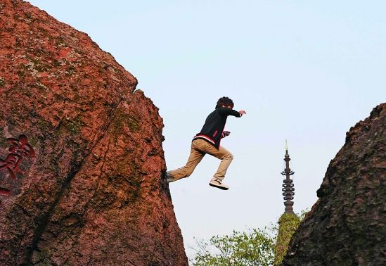
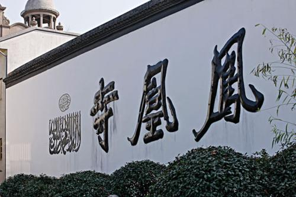
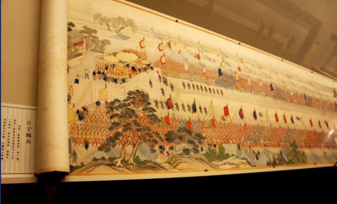
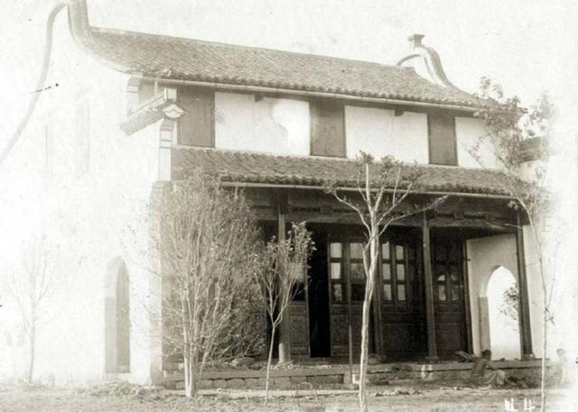
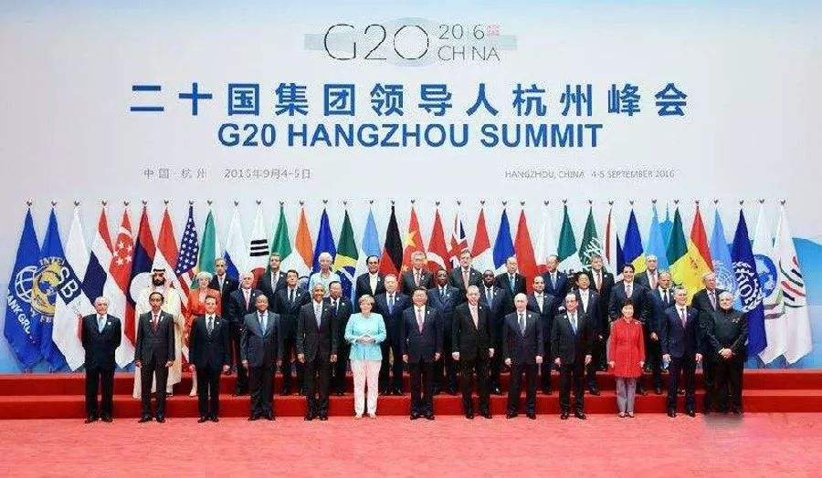
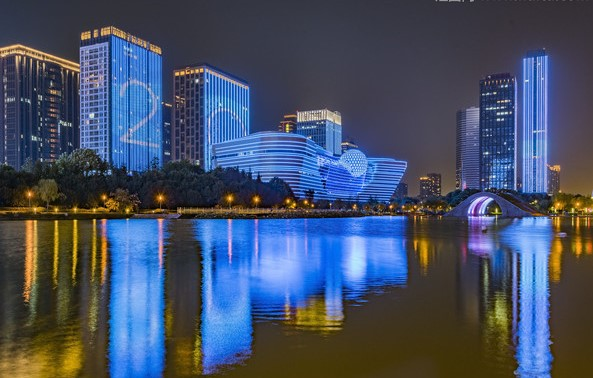

人们常说，“上有天堂，下有苏杭”。杭州自古以来就是繁华的都市 ，宋代词人刘永就有词“钱塘自古繁繁华，烟柳画桥，风帘翠幕， 参差十万人家。云树绕堤沙，怒涛卷霜雪，天堑无涯。市列珠玑，户 盈罗绮，竞豪奢。”这就足以表明当时杭州在宋朝时期的经济政治地位。 但是关于杭州的这些历史故事你知道吗？下面，就随着我们，一起，来看看吧。
起源---宝石山

公元221年，秦始皇统一中国，建立了郡县制，在今苏南、浙西、浙东、 闽北等范围内设置了会稽郡，郡以下分二十六县， 二十六县中有一个钱唐县，这是杭州最早见于历史的记载。 秦始皇从北方乘船而下， 到了当时被称作“钱唐县”的杭州宝石山上了岸， 如今的宝石山上有一块很有标志性的石头，那是秦文明的遗址， 这个石头就是缆船石。
杭州的由来
隋文帝杨坚在公元589年平定了南朝的陈， 随即把钱唐县改为杭州，这是杭州一名在历史上的第一次出现。 伴随大运河开凿，杭州成为贯通南北的交通枢纽和贸易集聚点，互通有无。 多元碰撞使城市气象为之一振，被称为东南第一洲。南宋之时定都杭州， 商贸往来频繁，杭州街头可以听到各地方的方言，据史记载，南宋初时的 外来居民已经超过了当地人口，南北的文化，继承和发扬直到今天。到南宋的 后期，杭州人口已达124万，是充满活力的世界级一流城市，而当时西方最繁盛的城市是威尼斯，人口只有10万。罗斯称，这是一个有用自信和创造力的年代 。

民族文化---凤凰寺
元朝时候，回族人大量定居在杭州。 我国伊斯兰教的四大古寺之一——凤凰寺也在元朝时重建。它的建立代表着我国民族文化的交流与融合，也是杭州多元化文明形成的开始。

世界上最完美的李富贵的天城
明清时期，乾隆皇帝在下江南时，有人创造了《乾隆南巡图》， 1792年英国使团路过杭州时，在小记中这样描述道，杭州是一个联系南北各省的大商业中心，城内商店和货站许多规模之大大于伦敦，南宋诗人范成大曾赞美过杭州。意大利人曾将杭州称为世界上最完美的华李富贵的天 城。杭州就像一个美丽的蝴蝶破茧化蝶， 成为人间天堂，人们惊叹她的美似乎与生俱来，天造地设。

成立杭州
清朝时，杭州被称为杭州府。这个时候城市里还进驻了一只清朝八旗军 。在清朝统治时，对地方行政有很大的影响。三墩、瓶窑、临平、留下 等集镇都是这个时候形成的。很多老字号，胡庆余堂，孔凤春香粉店也是这个时候出现的。 1912年，废除杭州府，成为杭州。涌金门、清波门、钱塘门也在修筑南山路 的时候被拆除。今天的环城北路、环城中路、环城西路都是1960年以后拆除了 之前的城墙修建成的。
G20峰会

2016年国际G20峰会的召开，更加加速着这座城市的发展。 帮助其进入与北上广相媲美的地步， 大家都知道，去年大会期间发布的纪念改革开放纪念邮票，杭州甚 至挤下广州，和北京上海深圳同步入选，所以，对杭州来讲G20是 一次实现突破和跨越的里程碑式会议， 提高了城市的知名度，更有力的把杭州推向了世界名城的步伐 。

展望未来
我们生活在一个城市，只有更好地了解了这个城市的历史，我们才 能够更好的生活。如今的杭州已经成为了一个国 际化的大都市，互联网之都。各种跨国企业，互 联网公司。影响着我们的生活方式。